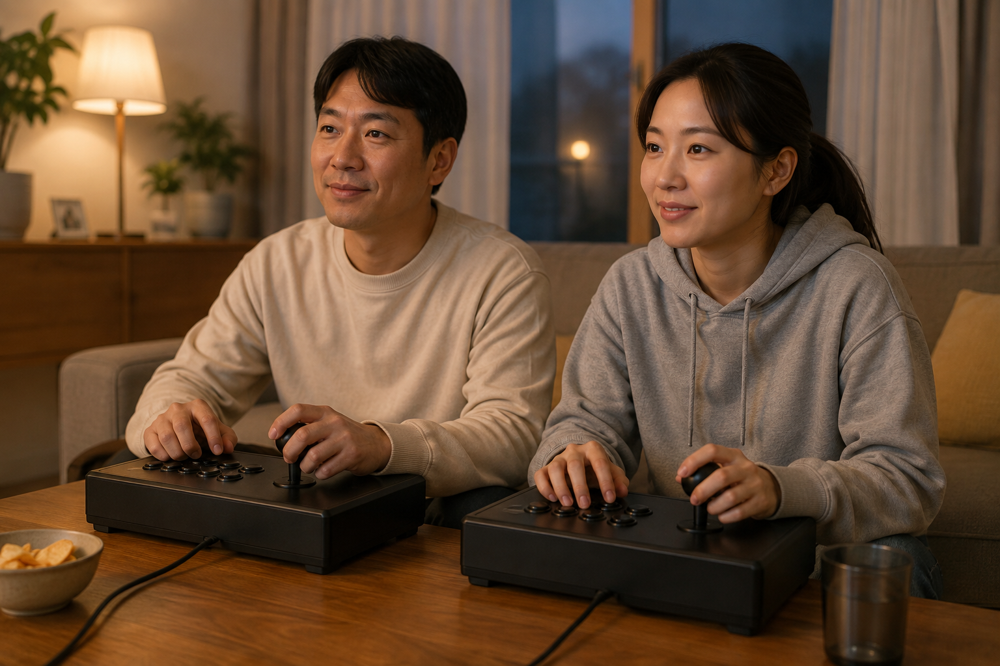
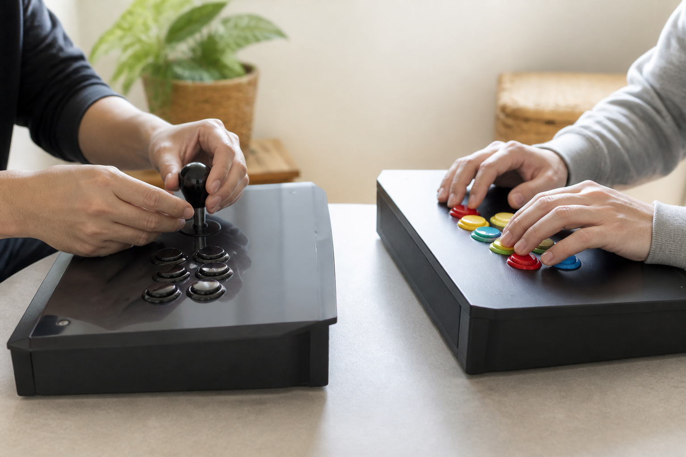
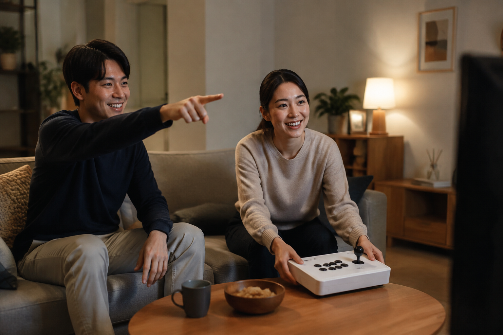

가정용 오락기를 두 사람이 함께 즐길 수 있는지는 기기 구성과 게임별 지원 인원에 따라 달라집니다. 구매 전에는 두 사람이 동시에 조작할 수 있는지 상품 안내를 확인하고, 함께 할 게임이 2인 이용을 지원하는지도 별도로 살펴보는 편이 좋습니다.

먼저 동시 이용 안내를 확인하세요
한 기기에 조작부가 어떻게 구성되는지, 추가 조작기가 필요한지부터 현재 상품 안내에서 확인하세요. 노리박스 제품 목록에는 ‘노리박스 무선 조이패드 2개 한세트 게임패드’처럼 두 개 한 세트임을 이름에 밝힌 상품이 있어, 함께 즐길 환경을 검토할 때 제품명과 상세 안내를 비교할 수 있습니다. 다만 조작기 수만으로 모든 게임의 동시 이용을 판단할 수는 없으므로 게임별 지원 인원도 확인해야 합니다.
두 사람이 함께 즐기려면 기기 구성과 게임별 지원 인원을 모두 확인해야 합니다.

각자 조작할 자리를 따로 그려 보세요
두 사람이 나란히 조작할 때는 기기 폭뿐 아니라 팔꿈치와 손을 움직일 여유도 중요합니다. TV 연결형을 생각한다면 조작기 두 개를 둘 위치와 화면을 보는 자리가 서로 불편하지 않은지 함께 살피세요. 노리박스는 제품을 준비할 때 직접 게임을 실행하고 조이스틱과 버튼을 만져보며 사용 과정의 불편을 확인한다고 소개합니다.
두 사람의 조작 공간은 기기 크기보다 실제 손과 팔의 움직임으로 확인해야 합니다.

게임 순서와 화면 보는 자리를 정하세요
대전처럼 동시에 하는 게임도 있지만, 번갈아 하는 방식이 더 편한 게임도 있습니다. 함께 할 사람의 키와 앉는 위치가 다르면 화면을 보는 각도나 조작 높이도 달라질 수 있으니, 실제로 어느 자리에서 누가 할지 미리 정해 보세요. 가족과 함께 사용할 때는 게임의 표현과 난이도도 보호자가 먼저 확인하는 것이 좋습니다.
같은 기기라도 게임 방식과 앉는 자리에 따라 두 사람이 느끼는 편안함은 달라집니다.
구매 전에는 두 가지를 판매자에게 물어보세요
상품 안내만으로 판단하기 어렵다면 구매하려는 모델에서 두 사람이 사용할 때 필요한 구성과, 원하는 게임의 2인 이용 여부를 구체적으로 문의하세요. 설치할 공간을 먼저 정리하려면 우리 집 공간에 맞는 오락기 형태, TV를 화면으로 쓸 계획이라면 TV 연결형 분리기통이 맞는 사람도 함께 확인할 수 있습니다.
구매 전 질문을 구체적으로 적으면 두 사람의 이용 환경을 더 정확히 확인할 수 있습니다.
현재 노리박스 오락실게임기와 조작 관련 제품은 제품자세히보기에서 확인하세요.